B.Sc. thesis · Department of Computer Science and Engineering · Metropolitan University, Sylhet · November 2026
The claim · Scan result · Study A · Study B · Study C · Synthesis · Verification · 3D model · Reproduce
Full study pages: Study A · The Attention Ablation Test · Study B · Commitment repair · Study C · Confidence and identity · Verification

Ask GPT-2 who created Python and it answers, without hesitation, "the late Paul Graham." The answer is Guido van Rossum. The sentence is fluent, specific and completely confident, and nothing in its wording says it is wrong.
The usual taxonomies sort errors like this by how the output relates to a source. They do not say which part of the model produced the error, so they cannot say where to intervene. This thesis treats the model the way a radiologist treats a patient in a scanner: change one component at a time, hold everything else fixed, and watch which errors change.
IMPORTANT Central claim. A confident hallucination is assembled by distinct parts of the model. Context mixing decides whether a false input becomes an error. Decoding commitment decides how far the error spreads. The output surface hides that the answer is a guess. Each role is measured from outputs alone, with interventions anyone can run.

| Component | What it decides | Key evidence |
|---|---|---|
| Context mixing | Whether a defect in the input becomes an output error | 650 vs 566 of 666 at 2.8B · 264 vs 210 of 279 on facts both models knew |
| Decoding commitment | How far a first error spreads | 92.5% → 48.1% · a different wrong fact works as well · only 2 of 111 known |
| Output surface | Whether the user can see the guess | 75.3% of wrong answers unhedged · AUROC 0.56 |
Every study follows the same four rules. Hypotheses were fixed before any output was scored. Human scoring was done twice, blind to which model wrote each answer (Cohen's κ from 0.85 to 1.00). Failed predictions are reported next to the ones that held. And every reported number is recomputed from the released raw files by one script.
Question. When a passage in the input contradicts what a model knows, does the way the model mixes context decide which one wins?
Design. Pythia (attention) and Mamba (selective state space) were trained on the same data (the Pile) with the same tokenizer (GPT-NeoX). Five size-matched pairs from 130M to 2.8B parameters, plus four more attention models (Qwen2.5-0.5B, 1.5B, 3B and SmolLM2-1.7B): 14 models, all run on one 8 GB laptop GPU. Two probes:
- Free recall. 200 SimpleQA questions, 2.8B pair, scored blind by two annotators (κ = 0.85).
- Context conflict. 111 facts, each asked alone, with a planted false line in a 9-line or 31-line text (early, middle or late), and with a planted true line. That is 999 items per model and 666 conflict items.

| What we measured | Attention · Pythia-2.8B | State space · Mamba-2.8B | Test |
|---|---|---|---|
| Free recall: SimpleQA answered correctly, of 200 | 3 | 3 | p = 1.000 |
| Planted false line repeated, of 666 | 650 | 566 | 90 vs 6 discordant · p = 2.5 × 10⁻²⁰ |
| Same test on facts both models knew, of 279 | 264 | 210 | p = 9.0 × 10⁻¹³ |
| Planted true line read correctly, of 111 | 111 | 110 | reading control |
All five matched pairs (conflict items followed, of 666)
| Pair (attention vs state space) | Pythia | Mamba | Discordant | Exact McNemar p |
|---|---|---|---|---|
| 160M vs 130M | 312 | 271 | 152 / 111 | 0.0135 |
| 410M vs 370M | 646 | 427 | 228 / 9 | 5.3 × 10⁻⁵⁶ |
| 1B vs 790M | 653 | 542 | 113 / 2 | 3.2 × 10⁻³¹ |
| 1.4B vs 1.4B | 648 | 186 | 462 / 0 | 1.7 × 10⁻¹³⁹ |
| 2.8B vs 2.8B | 650 | 566 | 90 / 6 | 2.5 × 10⁻²⁰ |
Group test on the 31-line texts: attention mean 91.1% vs state space 52.9% (Mann-Whitney p = 0.007). At 160M the pattern is mixed: on facts both models knew, the attention model followed the false line less often (8 vs 14 of 15).
Reading. Removing attention leaves recall from memory unchanged. It changes whether a passage can override what the model knows, even when the model knew better. Attention is the machinery of context grounding, and that machinery cuts both ways: it is what makes retrieval work when the text is true, and a direct route to confident error when it is false.
TIP Full study page: The Attention Ablation Test → Design figure, publication figure, both architectures in 3D, the 24-fact pilot record, a notebook and a guide to every file. This study used to live in its own repository; it is now part of this one.

Question. Once a model writes its first wrong fact, are the later errors caused by that commitment, or by a truth the model knew and suppressed?
Design. 111 wrong answers from three instruction-tuned models (GPT-OSS-120B, Qwen3.6-27B, ALLaM-2-7B). In each answer, the first wrong fact was replaced and the model continued writing. Four conditions: as generated, correct fact inserted, a different wrong fact inserted, and the question asked in isolation. Two annotators scored blind (κ = 0.94 for downstream error, 1.00 for isolated correctness).

| Condition | Result |
|---|---|
| Answers with a later error, before → after the repair | 92.5% → 48.1% (50 fixed, 3 broken, n = 106, p = 5.5 × 10⁻¹²) |
| Second annotator's independent scores | 97.2% → 50.0% (p = 2.35 × 10⁻¹⁴) |
| Correct fact inserted vs a different wrong fact | 54.6% vs 60.8% error-free (n = 97, p = 0.38) |
| Model answers correctly when asked on its own | 2 of 111 |
Reading. The later errors are elaborations of the model's own committed claim. Replace that claim with anything at all and about half of them disappear. The model was not hiding the truth: on these long-tail questions it never knew the answer. Repairing an answer at the point of divergence works even without supplying the truth.
TIP Full study page: Study B · Repairing the first wrong fact → Conditions, scoring columns, both annotators and the commands that reproduce every number.
Question. When a question is missing information, do models ask, or guess? And if they guess, can the user tell?
Design. Registered on OSF before any response was scored (10.17605/OSF.IO/CS967). Five open-weight models from four organisations (Gemma 3 27B, Gemma 4 31B, gpt-oss-120b, Qwen3-Next-80B-A3B, Nemotron 3 Super) at temperature 0. 142 factual questions, each in a fully specified form and with its key referent removed (same answer key), plus three identity probes. 5,620 responses scored blind by two raters (κ = 0.853 for correctness, 1.00 for verbal uncertainty).

| Finding | Number |
|---|---|
| Referent removed: models ask for clarification | 33.7% of prompts |
| Error among attempted answers, intact → referent removed | 39.1% → 52.0% (mixed-effects OR 4.12, 95% CI 2.76–6.14) |
| Wrong answers that carry no hedge | 75.3% |
| How well hedging separates right from wrong (0.5 = chance) | AUROC 0.56 |
| Same 50 questions, the user claims an identity | mean answer length 188 words (anonymous) vs 259–268 (patient, physician, researcher) |
Reading. When information is missing, models usually guess, and the wording barely changes. Hedging is not a usable warning sign. Evaluations should score clarification as a good outcome rather than read confidence from tone.
TIP Full study page: Study C · Confidence and identity → The registration, scoring rubric, prompt taxonomy, raw outputs and both raters' sheets.

An error starts either in the input or in missing knowledge. If the input holds a false statement, context mixing decides whether it wins over what the model learned, and attention lets it win far more often than a state-space mixer does. If knowledge is missing, the model produces a first wrong claim anyway. Once that claim is written, decoding commits to it and elaborates it. Through all of this the surface stays the same, so the user receives a fluent, confident, false answer with no cue to doubt it.
What follows for builders.
- Retrieval systems inherit attention's deference. An attention model will tend to repeat what it retrieves, true or false, so provenance matters as much as the model.
- Repair at the point of divergence. Interrupting the first wrong claim during decoding is a targeted fix, and it works without knowing the truth.
- Do not read confidence from wording. Treat clarification as a correct outcome. Do not use unprompted hedging as an uncertainty signal.

verification/verify_thesis_numbers.py
reads the released raw files directly, recomputes each reported figure
with its own code, and compares it with the thesis.
132 checks, 132 passed, 0 failedStudies A and B are recomputed in full. For Study C the script
recomputes what the released scoring sheets support (the original-label
figures: 39.9% → 66.7%, and 77.4% unhedged). The thesis reports those as
a robustness check beside the final, audited registered analysis; the
conclusion is the same under both. The full table is in verification/verification_report.txt
and Appendix A of the thesis.
The machine in 3D
The thesis's three-layer machine: training objective (red), context mixing (teal) and decoding (amber), with the output tokens rising from the top and the scanning collar around it.
The same model as an interactive object: drag to rotate,
scroll to zoom. A higher-resolution version is in assets/mri_machine_3d.stl.
Full file tree
MRI-of-a-Mad-Machine/
├── README.md this page (light and dark artwork)
├── docs/ this page and the three study pages as a website
├── thesis/
│ ├── MRI_of_a_Mad_Machine_Thesis.pdf the thesis, 37 pages
│ └── source/ LaTeX, figure scripts, figures, ledger generator
├── evidence/
│ ├── study_A_attention_ablation/ THE ATTENTION ABLATION TEST (own page, own 3D model)
│ │ ├── code/, data/ free recall: outputs, blind sheet, two annotators
│ │ ├── study1b/ 14-model context probe (999 items x 14, scored)
│ │ ├── study1b_pilot/ 24-fact pilot kept for the record
│ │ ├── figures/ publication figures (PNG + PDF)
│ │ ├── notebooks/ notebook mirror of the free-recall setup
│ │ └── assets/ artwork, turntable and STL for the study page
│ ├── study_B_commitment_repair/ 111 items, 4 conditions, baselines, both annotators
│ ├── study_C_confidence_and_identity/ prompts, probes, raw outputs, scoring sheets, code
│ └── introduction_example/ the GPT-2 "Paul Graham" output
├── verification/
│ ├── verify_thesis_numbers.py recomputes the reported numbers from raw files
│ ├── verification_report.txt 132 / 132 passed
│ ├── ledger.json every number, where it appears, where it comes from
│ └── figure_data.json exact values the thesis figures are drawn from
└── assets/
├── *-dark.svg, *-light.svg animated artwork for this README
├── turntable-*.gif the machine rotating in 3D
├── mri_machine_3d.stl 3D model (GitHub opens it in a 3D viewer)
└── source/ Python that generates every SVG and the STLThesis chapters
| Chapter | Content |
|---|---|
| 1 Introduction | The confident error, the question, the central claim, research questions, contributions |
| 2 Background | How a model produces an answer, and the work this thesis builds on |
| 3 Method | One intervention and one falsifiable prediction per component; safeguards; statistics |
| 4 Study A | Attention decides whether a false context wins |
| 5 Study B | Commitment decides how far an error spreads |
| 6 Study C | The output does not reveal the guess |
| 7 Synthesis | The component map and how a confident hallucination is assembled |
| 8 Conclusion | |
| A–C Appendices | Verification ledger, design record, reproduction commands |
Check every number (Windows PowerShell, Python 3.10 or later, run inside this folder):
py -m pip install pandas numpy scipy statsmodels matplotlib; py verification\verify_thesis_numbers.py; py thesis\source\make_figures.pyRebuild the PDF (needs a LaTeX installation with
pdflatex):
cd thesis\source; py make_ledger_tex.py; pdflatex main.tex; pdflatex main.tex; pdflatex main.texRecompute Study A on its own (no GPU needed):
cd evidence\study_A_attention_ablation; py code\analyze_study1a.py; cd study1b; py code\analyze_probe.py; py code\controls_known_facts.py; cd ..\..\..Re-run the architecture study itself: see evidence/study_A_attention_ablation/study1b/README.md.
All 14 models fit on one 8 GB GPU (about 3–4 hours in total).

Research behind the thesis
- R1. Sadi, Tasin and Naeem. From Architecture to Output: Testing the Structural Origins of Hallucination and the Amplifying Role of Data. Under review, NEJLT. arXiv:2606.07537. Studies A and B.
- R2. Sadi, Tasin, Naeem, Chowdhury and Chowdhury. Wrong with Confidence: Measuring Hallucination, Overconfidence and Identity-Conditioned Behaviour in Large Language Models. Under review, PeerJ Computer Science. OSF registration 10.17605/OSF.IO/CS967. Study C.
- The Attention Ablation Test used to be a separate repository. It is now Study A in this repository, and the old address points here.
Code: MIT (LICENSE). Data and
figures: CC BY 4.0 (LICENSE-DATA.md). Thesis text: ©
2026 the authors. SimpleQA questions are from OpenAI's SimpleQA
benchmark (MIT). Pythia, Mamba, Qwen and SmolLM are released by their
authors under their own licences.
Source, data and code: github.com/RejaulKorimSadi/MRI-of-a-Mad-Machine